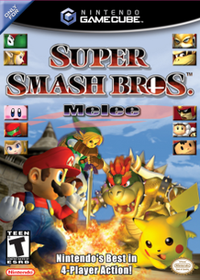
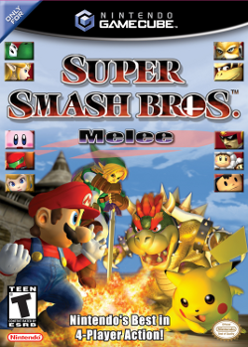

Life Outside Work
 
I'm an avid fan of Super Smash Bros Melee, a fighting game released in 2001 for the Nintendo Gamecube. Falco is the character I use most, and when I'm not at MIT, I like to attend the weekly local Melee tournaments in NYC known as Nebulous.

I'm an avid fan of Super Smash Bros Melee, a fighting game released in 2001 for the Nintendo Gamecube. Falco is the character I use most, and when I'm not at MIT, I like to attend the weekly local Melee tournaments in NYC known as Nebulous.
(Fun Fact: I'm generally acknowledged as the second best undergraduate Melee player at MIT).
Other video game franchises I enjoyed playing recently include Fire Emblem, Persona, and The Nonary Games. I also enjoy reading manga and watching anime. My favorites include School Rumble, Fate/Stay Night, and White Album 2.